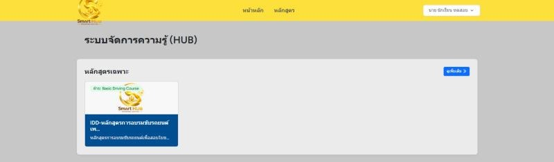
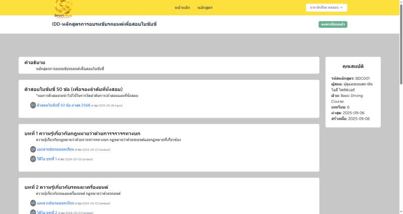
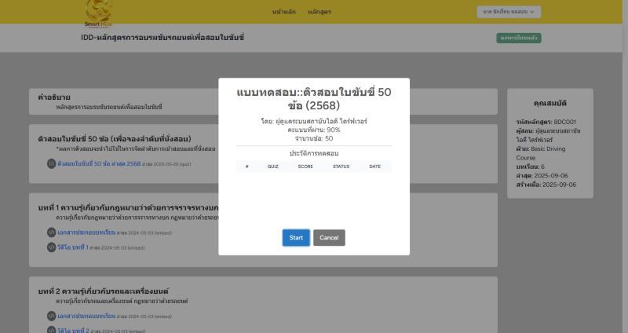
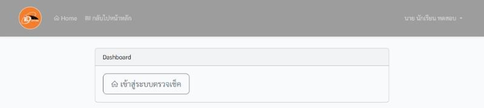
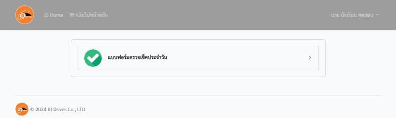
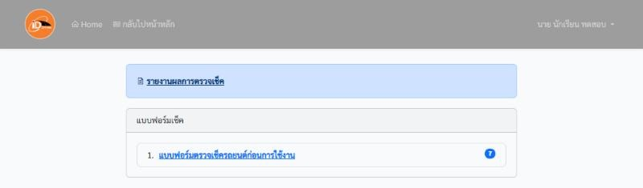
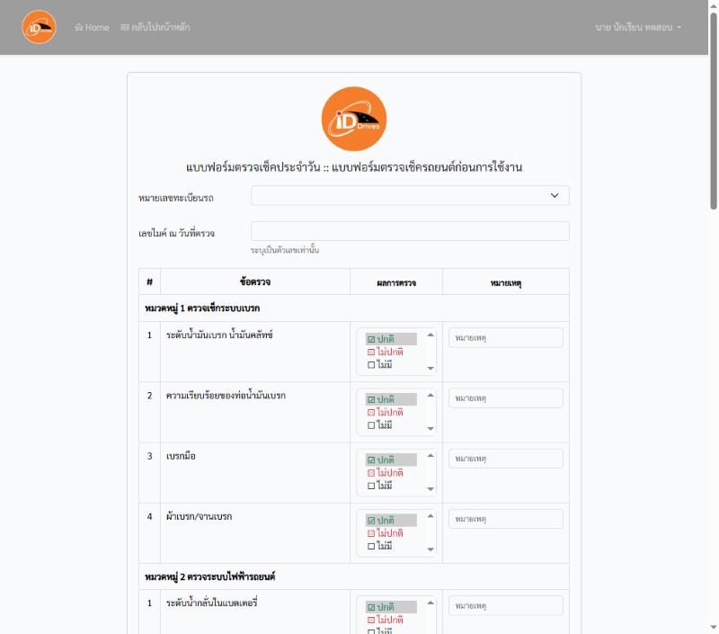

คู่มือเข้าใช้งานระบบสำหรับนักเรียน
ล็อกอินครั้งเดียวที่หน้า SSO แล้วเลือกใช้ SmartHub (เรียน/ทำแบบทดสอบ) หรือ Check-Before (ตรวจเช็ครถ) ได้ทั้งสองระบบ
1. เข้าสู่ระบบ
- เปิดเบราว์เซอร์ไปที่ https://sso.trainingzenter.com/login
- กรอก เลขบัตรประชาชน (หรือเลขพาสปอร์ตสำหรับชาวต่างชาติ) ในช่องแรก
- กรอก เลขเดิมซ้ำ ในช่อง "ยืนยันเลขบัตรประชาชน"
- กด เข้าสู่ระบบ
หน้าเข้าสู่ระบบ
เมื่อเข้าสำเร็จจะเห็นหน้า Service ให้เลือกบริการ:
หน้าเลือกบริการ
| บริการ | ใช้ทำอะไร |
|---|
| ระบบจัดการความรู้ออนไลน์ Hub-Training (SmartHub) | เรียนบทเรียน ดูวิดีโอ และทำแบบทดสอบ |
| Check-Before Driving | ตรวจเช็คสภาพรถก่อนใช้งาน |
2. SmartHub: เรียนและทำแบบทดสอบ
- ที่หน้า Service กด ระบบจัดการความรู้ออนไลน์ Hub-Training
- หากมีหน้ายืนยัน "ลงทะเบียนด้วยชื่อผู้ใช้" ให้กดปุ่มที่มีชื่อของคุณ
หน้ายืนยัน
- ที่หน้า "ระบบจัดการความรู้ (HUB)" วางเมาส์บนหลักสูตรของคุณแล้วกด ดูหลักสูตร

หน้าหลัก SmartHub
- กดปุ่ม ลงทะเบียน ที่มุมขวาบน ระบบจะเปิดรายการบทเรียน
- บทที่ 1, 2, ...: เปิดเอกสารประกอบการเรียนและวิดีโอของแต่ละบท
- ตัวสอบใบขับขี่ 50 ข้อ: แบบทดสอบฝึกซ้อมก่อนสอบจริง

หน้าหลักสูตร
- กดชื่อแบบทดสอบ จะมีหน้าต่างบอกเกณฑ์ผ่าน (90%) และจำนวนข้อ (50) กด Start เพื่อเริ่ม หรือ Cancel หากยังไม่พร้อม ผลสอบจะแสดงในตาราง "ประวัติการทดสอบ"

เริ่มทำแบบทดสอบ
3. Check-Before: ตรวจเช็ครถ
- ที่หน้า Service กด Check-Before Driving (เปิดในแท็บใหม่)
- หน้า Login มีชื่อผู้ใช้และรหัสผ่านถูกกรอกให้แล้ว กด Login
หน้า Login ของ Check-Before
- กด เข้าสู่ระบบตรวจเช็ค

Dashboard
- กด แบบฟอร์มตรวจเช็คประจำวัน

เมนูตรวจเช็ค
- กด แบบฟอร์มตรวจเช็ครถยนต์ก่อนการใช้งาน (ส่วน รายงานผลการตรวจเช็ค ใช้ดูประวัติ)

รายการแบบฟอร์ม
- กรอกแบบฟอร์ม
- เลือก หมายเลขทะเบียนรถ ที่จะใช้ และใส่ เลขไมล์ (ตัวเลขเท่านั้น)
- ตรวจแต่ละข้อตามหมวด แล้วเลือกผล ปกติ / ไม่ปกติ / ไม่มี ถ้าไม่ปกติให้ใส่ หมายเหตุ
- เลื่อนลงล่างสุดแล้วกด บันทึกข้อมูล

แบบฟอร์มตรวจเช็ค
ปัญหาที่พบบ่อย
- เข้าสู่ระบบไม่ได้: ตรวจว่ากรอกเลขบัตรประชาชนครบและตรงกันทั้งสองช่อง หากยังไม่ได้ให้แจ้งเจ้าหน้าที่สาขา
- Check-Before ไม่เปิด: เบราว์เซอร์อาจบล็อกหน้าต่างป๊อปอัป ให้อนุญาตป๊อปอัปของเว็บไซต์แล้วกดใหม่
- ออกจากระบบ: กดชื่อของคุณมุมขวาบน แล้วเลือก Logout